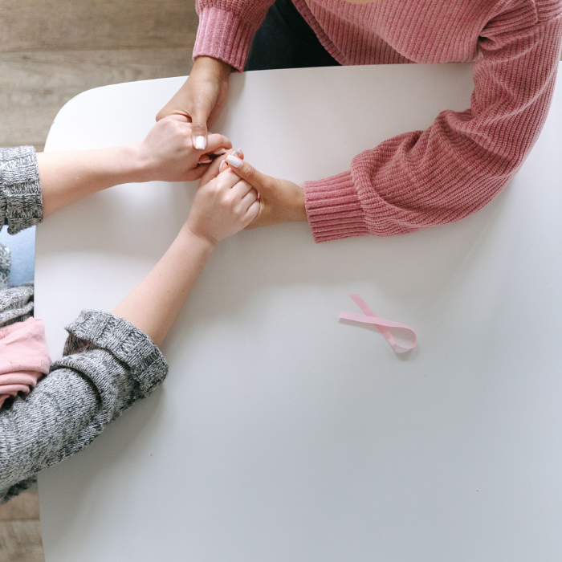

[Título de publicación o artículo]
[Extracto provisional que se sustituirá por una síntesis del contenido editorial.]
Leer publicaciónHay experiencias que transforman mucho más que el cuerpo. En Elegía Rosa reconocemos que cada experiencia es distinta y que el duelo puede aparecer de muchas formas: ante lo que cambia, lo que se pierde, lo que permanece y aquello que todavía está por venir.

Acompañamiento · Tanatología · DueloElegía Rosa es un proyecto de acompañamiento y orientación emocional dirigido a personas que viven con cáncer de mama, a quienes han atravesado la enfermedad y a sus familiares y seres queridos. Desde una mirada tanatológica, buscamos abrir conversaciones sobre las pérdidas visibles e invisibles que pueden acompañar la enfermedad: los cambios en el cuerpo, la transformación de la vida cotidiana, la incertidumbre, los vínculos y las distintas formas de experimentar el duelo.
Cada proceso tiene sus propias preguntas, emociones y desafíos.
[Breve descripción provisional del tema y del tipo de contenidos que se encontrarán aquí.]
Explorar sección[Descripción breve de la categoría o experiencia.]
[Descripción breve de la categoría o experiencia.]
[Extracto provisional que se sustituirá por una síntesis del contenido editorial.]
Leer publicación[Extracto provisional que se sustituirá por una síntesis del contenido editorial.]
Leer publicación[Extracto provisional que se sustituirá por una síntesis del contenido editorial.]
Leer publicación[Introducción al espacio de recursos: materiales informativos, herramientas de reflexión y contenidos de apoyo para pacientes, personas cercanas y acompañantes.]
En Elegía Rosa creemos que acompañar también significa escuchar, reconocer y dar lugar a aquello que muchas veces resulta difícil expresar. Nos acercamos a la tanatología desde una perspectiva humana y sensible, procurando que la información sea clara, accesible y respetuosa.
Reconocemos que detrás de cada diagnóstico hay una persona con una historia, vínculos, temores, decisiones y formas propias de afrontar los cambios. Por eso, queremos construir un espacio libre de juicios, donde hablar de las pérdidas no signifique dejar de reconocer la esperanza, y donde acompañar no implique tener todas las respuestas.